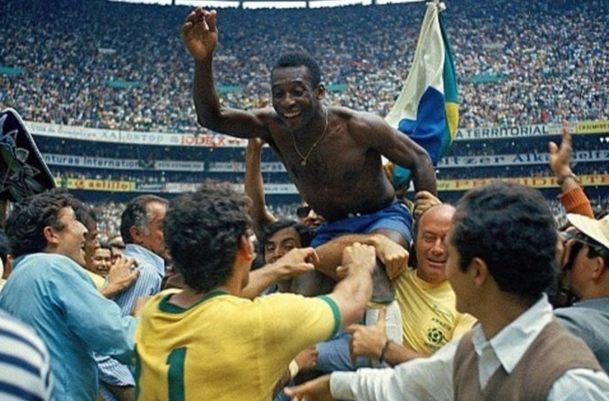
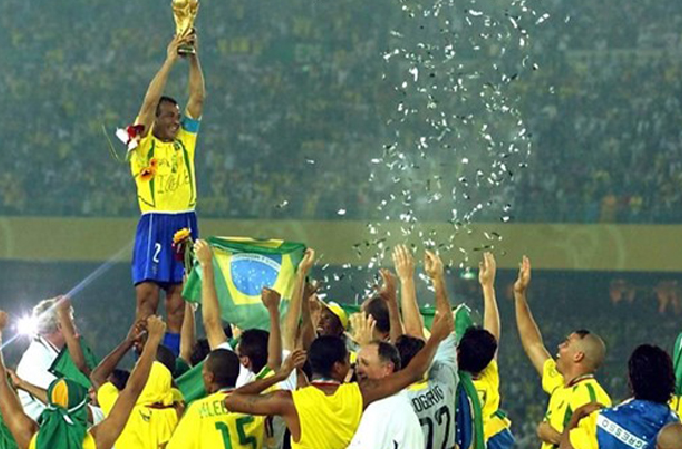
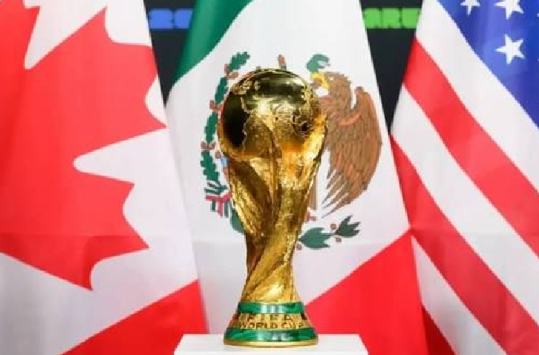
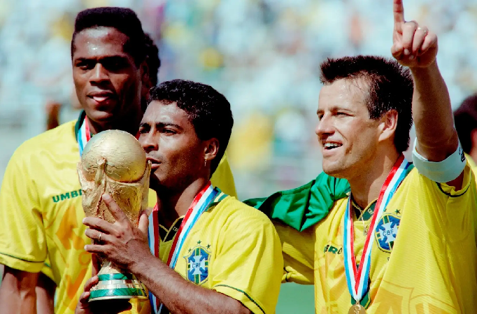
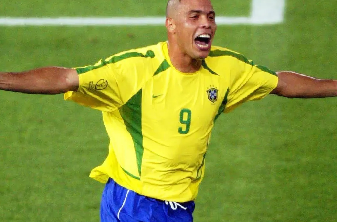

Sobre a Copa do Mundo

A copa do mundo FIFA é torneio de futebol mais assistido do planeta. Realizada a cada 4 anos, reúne as melhores seleções do mundo em uma competição que para países inteiros
Desde a primeira edição em 1930, no uruguai, já foram 22 torneios disputados. Em 2026, pela primeira vez na história, três países sediam juntos: Estados unidos, México e Canadá.
ver históriaA Copa em Números

22 Edições
Já foram realizadas 22 copas do mundo desde 1930, com pausa apenas durante a Segunda Guerra Mundial.

5 Títulos do Brasil
O Brasil é o maior campeão da história, com as conquistas em 1958, 1962, 1970, 1994 e 2002.

48 Seleções em 2026
A copa 2026 estreia o novo formato com 48 seleções, diferentemente das 32 das edições anteriores.
Navegue pelo Site


